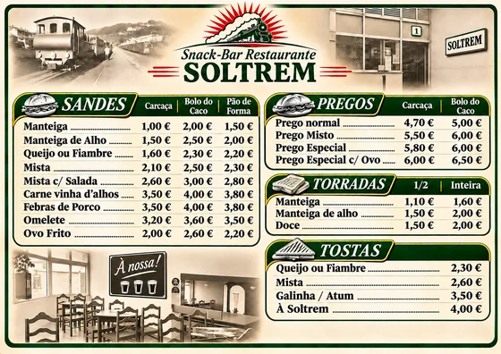
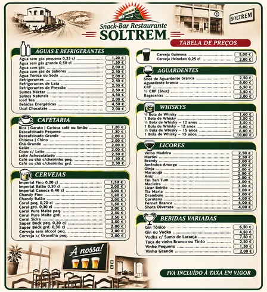
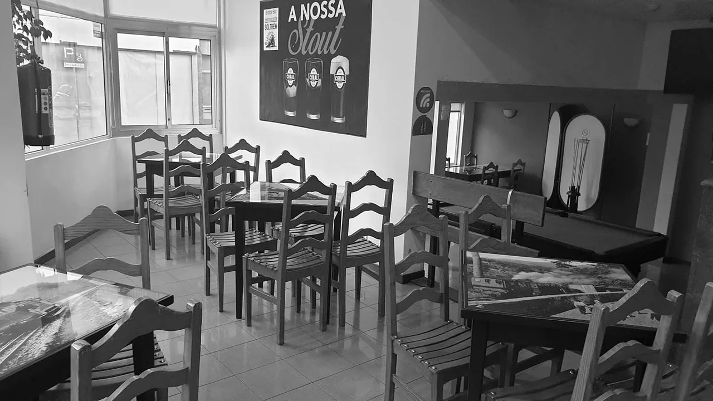
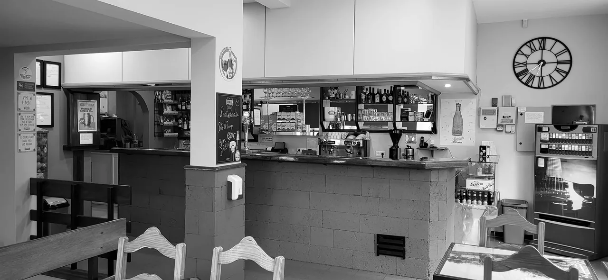

Rua do Comboio, 1 · Funchal
A NOSSA CARTA
Escolhe um menu e explora os preços.
Sandes · Pregos · Tostas

Cafés · Cervejas · Mais

Toca num menu. Podes ampliar os preços com dois dedos.
O NOSSO ESPAÇO


VISITA-NOS